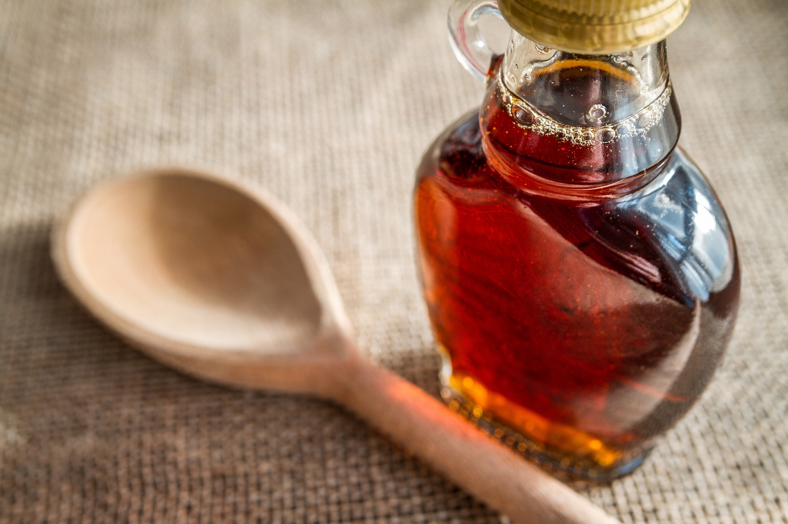

News
Law & Business
Travel
Sports
Society
Weather
News
Law & Business
Travel
Sports
Society
Weather
BREAKING MAPLE NEWS
Stolen barrels of maple syrup have been found.
MORE TO COME - STAY TUNED
BREAKING MAPLE NEWS
Global maple syrup shortage: Canada has tapped into its emergency reserves
The great maple syrup shortage of 2021 is upon us, and Canada is taking serious measures. The pandemic has significantly increased demand for the “blonde gold.” So much so that global sales of maple syrup shot up by almost 37% in the last year, according to the Quebec Maple Syrup Producers association. Simultaneously, Quebec’s annual maple syrup harvest—which is responsible for the majority of the world’s supply—is lower than last year’s. That’s why Quebec’s maple syrup producers have turned to their emergency supply for the first time in three years.
Montana's maple syrup producers face climate change challenges
7 million new taps
This Olympic skiier is a maple syrup expert
Wait, does maple syrup go bad? (spoiler alert: yes, but yours is probably fine)
An athlete brought maple syrup to the Olympics & it's the most Quebecois thing ever
Maple syrup production fell everywhere last season
Supreme Court agrees to hear case involving fine for massive maple syrup heist
Maple syrup farm closes, saying bittersweet goodbye after 45 years

National Maple Syrup Day: celebrations and traditions of this delicious day
The great maple syrup heist: Trial opens in largest theft ever in Quebec
Park offers maple syrup field trip opportunity
Jim Dixon’s DIY Dish: Swedish-Style Caramelized Cabbage